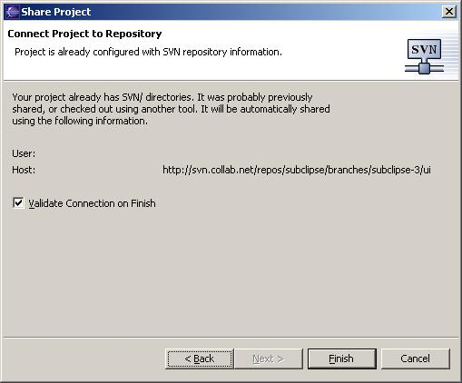

This is the process for taking an existing Subversion working copy that exists in your Eclipse workspace and connecting it to Subclipse. If you have a brand new project that you want to import into your repository, then see Import a New Project into a Subversion Repository.
This procedure assumes that you have an existing project in your Eclipse workspace and that project is already a valid Subversion working copy.
Select the project you want to connect with Subclipse and right click to select Team > Share Project....

This will begin the Share Project wizard. Select SVN as the repository type and click next.
Subclipse will check for valid .svn metadata folders in the root of the project you originally selected to share. If it finds those folders, then you will see a screen like the one above. If you do not see this screen, and instead see the screen that you would see when this is a new project, then you should cancel the wizard. This would mean that Subclipse did not recognize this an existing Subversion working copy. If you continue, Subclipse will treat this like a new project to import into your repository. Otherwise, assuming that you do see the above screen, just click Finish to connect the project with Subclipse. The wizard will complete the process by launching the commit dialog to commit any locally modified files. You can cancel the dialog if you do not want to commit anything at this time.
Import a New Project into a Subversion Repository
Creating a Repository Location